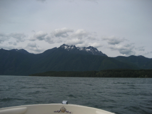
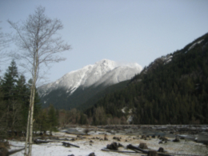
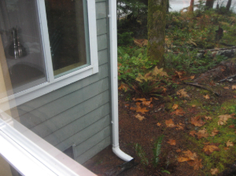

This was the first boat ride to the cabin.

The first time seeing snow on the mountains at Lake Cushman.

Beautiful leaves in the Fall.
In May of 1999, my parents visited Lake Cushman for the first time. They looked at several lots for sale before settling for a waterfront on the northern end by the causeway (bridge). In September of 1999, the lot was cleared for a travel trailer with a power system, well, and septic system. A dock was put in at the same time. We had the travel trailer for about two years. In 2001, we decided to upgrade to a manufactured home so there would be more room for our growing family. Our “cabin” was a 715 sq ft, 2br 1ba with a screened-in porch. We had to bring the cabin up on a special "crawler", because it was too low to go over the bridge. We have video of my dad basically filming the guys doing their jobs with him telling them what to do. The video cuts out as one of the guys comes up to my dad with his hand reaching for him. After the cabin was put in, we started a journal. That is what everyone wrote in, every time they came up for the next 21 years. It is our memory keeper.